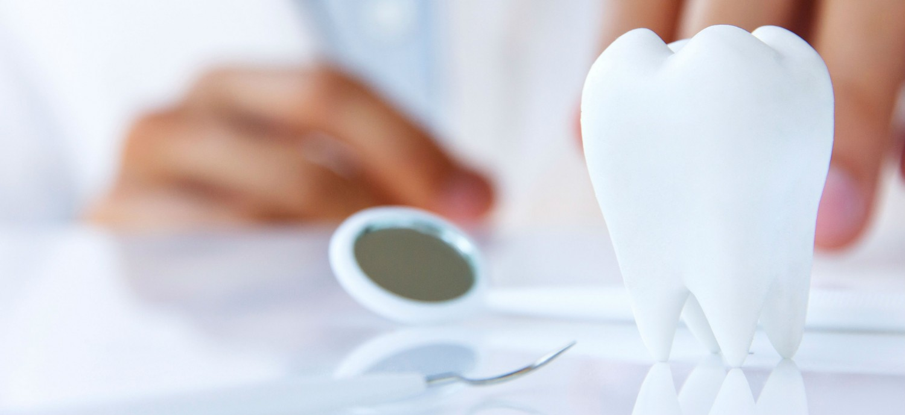

General Dentistry
Periodontal Scaling and Root Planing
Root planing and scaling is one of the most effective ways to treat gum disease before it becomes severe. Root planing and scaling cleans between the gums and the teeth down to the roots. Your dentist may need to use a local anesthetic to numb your gums and the roots of your teeth.Schedule a Consultation
Invisalign
Invisalign is one of the newest innovations in dental orthodontic treatments. It straightens the alignment without causing any harm to the teeth or discomfort. The aligner trays are custom made comfortable and visually invisible plastics that the patient wears 22 hours a day. The advantage of invisalign treatment is the ability of removing the device when one needs and due to that fact there is no food restriction. The benefits of Invisalign- Non visible and comfortable
- No food restriction
- Remove when needed
- No gum irritation
- Easy cleaning and flossing
- No staining after the treatment
Fillings
Modern Dentistry is able to restore teeth with tooth color materials that provide the natural appearance of the existing tooth. The light curing composite material that the tooth is filled with comes in varying shades to matches the actual tooth. In case the cavity is deep there might be an extra layer needed that is called liner. A liner is a layer that is implied to the tooth underneath the filling to protect the tooth from sensitivity. The benefits of composite bonding- Cosmetic restoration
- Treat decayed teeth (cavities)
- Restore tooth structure that is exposed due to receding gums
- Repair chipped or cracked teeth
- No risk of mercury or toxication
Inlays and Onlays
Dr. Eliasian tries to save every millimeter of a healthy tooth structure. Onlays and inlays are a great way to crown a tooth without touching extra structure of the partial healthy tooth. When the tooth is too damaged to support a filling and crowning the tooth might be too extreme since a part of the tooth is still healthy, then an onlay or inlay is the best treatment. Inlays and onlays are made in a dental laboratory. They are created from porcelain and are being cemented to the surface of the tooth. Inlays and onlays are basically the same kind of restoration but they cover different surfaces of the tooth. Onlays are being made also for esthetic reasons. They match perfectly to the natural tooth color and anatomy.Night Guards
Bruxism and TMD (temporary joint dysfunction) is not a condition that should harm or change the quality of our life. At Elite Dental Group Dr.Andre Eliasian can prescribe an oral device that is called night guard. The appliance is custom made and fits comfortable to the patient’s mouth. It is crucial to ware custom fitted professional made night guard to prevent joint pain and discomfort. Grinding and clinching can cause- Jaw soreness
- Headache
- Tooth pain
- Cracked teeth
- Worn and uneven teeth
- Loose teeth
- TMD
Porcelain Fused to Metal Crowns (PFM)
A porcelain-fused-to-metal dental crown has a metal base that is fused with a thin layer of porcelain. The crown is being matched to the natural anatomy of the tooth and the color of the adjacent teeth. A porcelain crown is followed with two visits. On the first visit the tooth is being prepared for a mold that is being send to the laboratory. During the same visit we are also creating temporary crowns that have an esthetic look. On the second visit the crown is being cemented.Zirconia Crowns
Zirconia crowns are known as all ceramic crowns. It is made of a solid Zirconia stone that is known for its strength and is compatibility with the human body. Zirconia crowns are safe in the matter of allergic reactions. The crown is more light and comfortable to the mouth due to the fact of being made of a solid material. Zirconia crowns are also admired for its esthetic reasons. The translucent Zirconia crowns that are made of a whitish stone are very hard to differ from natural teeth.- Strength
- Aesthetic
- Minimal preparation of the tooth
- Lightness
Snoring and Sleep Apnea
Snoring or Sleep Apnea is a medical condition that is leaded with sleepless nights and serous long-term heath issues. Sleep apnea is defined with breathing pauses for more then 10 seconds, which affects to the low amount of oxygen in the blood, that can cause to many health problems. Elite Dental Group is happy to announce that we are able to prescribe an oral appliance therapy that is an effective treatment for snoring or sleep apnea. The oral appliance is custom made and supports the jaw to be in a position where it can maintain an open upper airway. Oral appliance therapy is a non-invasive treatment. The appliance fits comfortably in the patient’s mouth and dramatically improves the quality of the life due to the fact of easy breathing.Cosmetic Dentistry
Veneers
Veneers are being made mostly for esthetic reasons. The tooth is being prepared as conservatively as possible to create a surface for a thin shell of a tooth-colored material. Veneers are being made in a dental laboratory and are created from a thin layer of porcelain that is cemented on the surface of the tooth. Veneers are recommended in cases of- Abrasions
- Erosions
- Discoloration
- Anomalies
- Restoration esthetic reasons
Implants
Extractions – Site preservation
As much as we avoid extractions and it is the last diagnose that we would like to do, in some cases the tooth cannot be saved and the only treatment might be to remove the damaged tooth. Nevertheless, Dr. Andre Eliasian and his team will make a change in your opinion and experience in the unwanted process of extractions. We are ensuring a pain-free process that will be guided with follow up visits. Extractions are necessary in cases of- Impacted wisdom teeth
- Advanced gum disease
- Below gum line fractured teeth
- Severe tooth decay
Dental Implants
Loosing a tooth can change the quality of the life, where it creates discomfort in the mouth and affects our smile. Dental implant became one of the most significant treatments in dentistry. Implant are a great way to restore the alignment in a way where it looks and functions as a natural tooth. Dental implants are small metal anchors made of titanium. The surgically placed titanium implants have the unique ability to fuse to the jawbone by providing a strong foundation. After the dental implants are successfully placed and the gum is healed the restoration can be proceed by making- Single crowns
- Bridges
- Dentures
Schedule a Consultation
Ridge Augmentation
Bone graft is also used for ridge augmentation. After an extraction has been made “ ridge augmentation” is implied to recreate the natural contour of the bone that was lost during the removal or due to the severe infection. A bone graft is made of a bone from deceased donor that has been proceed, cleaned and stored for patient uses.Immediate Dental Implants
Modern dentistry succeeded in adapting more conductive and timesaving ways in its treatments. Immediate implants are the top innovation in dentistry. The placement of immediate implants make able to do a few procedures on the same visit, and provide with the benefit of having a better result and saving time.- By extracting a tooth the jawbone underneath starts to shrink back, and placing an implant at the same time creates the benefit of keeping the maximum amount of jawbone and have more support for implants.
- Immediate implants make able to restore the smile in just a few hours.